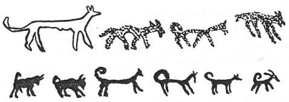

Tibetlilerin köpek asıllı olduklarına dair efsane eski Çin kültüründe ve Orta Asya’da çok yayılmıştır. Milattan önceki çağlarda Çinliler daha ziyade kendileri ile komşu olan Tibet kavimlerini tanıyorlardı. Çinliler bugünkü Şansi Eyaleti’nin güney-batısındaki Tibet kavimlerine, çok eski çağlardan beri Ch'üan-chiang, yani "Köpek Tibetliler" derlerdi. Rivayete göre onlar, iki ak Köpek’ten türemişler ve bu yolla çoğalmışlardı. Gerçekten köpek, bu kavimlerde tabu ve mukaddes sayılırdı. Onların oturdukları yerlere Çinliler bazen de "Köpek yurdu" derlerdi. Kuzeydeki Proto-Moğol Kavimlerinden Wu-Huan'larda da köpek, dinî bir rol oynamıştı (Ç. Ş. komşuları, s. 48). Meselâ ölülerin ruhuna kılavuzluk etmesi için, köpekle atın ölü ile birlikte gömüldüğü onlarda da duyulmamış değildir. Fakat bu âdet, nihayet insanların iki sadık ve en yakın ehli hayvanlarının öbür dünyada da yardım etmesi inancından başka bir şeyle açıklanamazdı. Bu sebeple Tibetlilerin köpek kültü, kendilerini Orta Asya Türk kültürlerinden ayıran başlıca özellikleridir.

Şekil 53: Orta Asya ve Sibirya Şamanları ile yeraltı buluntularında köpek resmine çok az rastlanır. Yukarıdaki resim, Abakan-Kırgız Şamanlarının günlük hayatını gösteren elbise ve davul tasvirlerinden alınmıştır. Buradaki köpekler de kurda benzetilmiştir (İvanof, Aynı esr., s. 605).
Türkler köpeği daima aşağı bir hayvan olarak görmüşlerdi. Bu sebeple Tibetlileri de bu inançlarından dolayı aşağı bir kavim olarak kabul etmişler ve onları bu yüzden her bahane ile azarlamışlardı. Yine bu yüzden Türkler, devletlerarasındaki protokolde, Tibetlilerle aynı seviyede görülmelerine tahammül edemezlerdi. Nitekim Çin imparatoru, Büyük Göktürk hükümdarı Bilge Kağan’ın güttüğü müstakil ve biraz da Çin'in durumunu aşağılatan siyasetinden dolayı, Türklerin Çin'den kız alma isteklerini yerine getirmemişti. Buna karşılık kendilerine tam manasıyla tâbi olan Tibetlilere ise kız vermişti. Bilge Kağan’ın buna kızarak söylediği şu sözler, Türklerin Tibetliler hakkındaki düşüncelerini belirten önemli bir belgedir:
"(725-726 senesinde) Bilge Kağan gelen Çin elçisinin şerefine bir ziyafet vermişti. Kendisi, Hatun'u, Kül-Tegin ve Tonyukuk bir çadırda otururken, Bilge Kağan, Çin elçisine şöyle dedi : - "Tibetliler nihayet bir köpek neslinden gelirler. Buna rağmen Çin İmparatorluğu onlarla, kız vermek suretiyle bir anlaşma yapmış bulunuyor. Kitan ve Hsi gibi kavimler de bizim kölelerimizdirler. Siz onlara da birer Çin prensesini gelin olarak gönderdiniz. Biz Göktürkler ise, size yaptığımız kız isteme taleplerine henüz daha hiç bir cevap alamadık. Peki, buna ne diyebileceksiniz? (LMT, s. 116)"
Türk mitolojisinde geçen, "Barak" veya "İt-Barak" adlı efsanevî köpekten yukarıda bahsetmiştik. Eski Türkçe Barak sözünün, Osmanlıcada "Burak" şekline girdiğini ileri sürmüş olanlar da yok değildir. Gerçekten, "Burak" adı eski Osmanlı metinlerinde "Barak" şeklinde yazılmaktadır. "Barak" an'anesinin Osmanlılarda da yaşamış olması çok önemlidir. Ali Ekber'in "Hıtay-nâme" adlı eserinin Tibet köpeklerinden bahseden kısmının Osmanlı tercümelerinde, bu köpekler Türkçe "Barak" veya "Burak" sözü ile karşılanmaktadırlar. Süleymaniye Kütüphanesi Esat Efendi nüshası ise bu köpeklere "Burak-ı Hindi" adını verir (s. 37 a). Yani, Hind Burak'ı demektir. Öyle anlaşılıyor ki, Osmanlılar Tibet ile Hindistan'ı birbirine karıştırmışlardı. Türkçe tercümelerin, birinde ise "İt-Barak" şeklinde bir yazılışı da gördük. Buna rağmen Ali Ekber, Osmanlıların bu köpeklere "Sasani" dediklerinde ısrarla yazar. Osmanlı tercümelerinin bu tabire itibar etmemelerim, bunun sıhhatine gölge düşürür. Eski Türk edebiyatında köpeğin adı, ancak av köpeklerinden söz açıldığı zaman geçerdi. Meselâ Manas- Han ve oğulları ile ilgili destanlarda, kahramanların av kuşları ile av köpekleri, yanlarından ayırmadıkları en önemli arkadaşları idiler. Köpek, Türk Takviminin 11. Yılıdır. İranlılar ise dünyayı bir "alaca köpeğe" benzetirlerdi. Onlara göre, dünyanın ve hayatın durmadan değişen devranı, bundan başka bir şeye benzetilemezdi. Türkçemizdeki "İt-Canlı" deyimi de Farsçada vardır. Oğuz Han'a tâbi olan, kuzeydeki "İt-Barak" kavmi de Marco Polo'nun bahsettiği köpek başlı, insan vücutlu kuzey kavimlerinden başka bir şey olmasa gerekti. Bundan sonraki bölümümüzde Proto-Moğolların köpekle ilgili efsanelerini incelerken, bu konuya tekrar döneceğiz. Av köpeklerinin cinsleri hakkında pek çok deyim kullanılmıştır. Burada bu sözleri inceleyecek değiliz. Fakat bir Türk genci için, iyi bir av kuşu ile av köpeğine sahip olmak, en büyük bir gurur sebebiydi. Nitekim Kutadgu-Bilig şöyle diyordu:
"Uçarıyı uçurtmaz, senin avcı kuşların,
"Yürüyeni yürütmez, alaca kör köpeğin."
(Uçarıg uçurmaz sening kuşlarıng, yorırıg yontmaz kör esring iting) (K.B., 5379)
Bunun dışında Türklerde, köpeğe pek itibar gösterilmemiştir. Hatta sadakatinden de söz az açılır. Çünkü yaratılış destanında da, onun Tanrı'ya bile körlük ettiği söylenmiştir. Kırgızların şu atasözü de boş değildir:
İt semirirse eğer, yanına kişi koymaz: (İt semirirse, yanına kişi yutpas). Anadolu'daki atasözlerimizi, deyimlerimizi de herkes bilir. Bunlardan söz açacak değiliz.
Kırgızların kırmızı bir köpekten türediklerini söyleyen bazı batılı kaynaklar da vardır. Fakat biz, yerli kaynaklarda buna rastlamadık.
Proto-Moğollarda, "Köpek-Ata" ile ilgili efsaneler:
Türklerin herşeyi, boz yeleli, keskin dişli, kuvvet ve kudret timsali kurttur. İlksel hayatın aşamalarını çoktan aşmış olan Türkler, büyük imparatorluklarının topraklarına bir kudret sembolü aramağa çok erken çağlarda başlamışlardı. Kuzeydoğu Asya'nın buzlu tundralarında toprak altında yaşayan veyahut da Doğu Asya'nın medenî dünyadan uzak çöllerinde, ormanlarında, Tanrı'nın verdiği ilksel akıl ve sosyal düzenle hayat sürmeğe mecbur olan Moğolların ataları ise gerçekten talihsiz idiler. Sonraki çağlarda her ne kadar Çin'le bağlar kurmuş ve yeni bir dünyaya girmek istemişlerse de, o eski günlerin inanışlarını üzerlerinden bir defada atamamışlardı.
M.Ö. III. asrın sonlarında, Orta Asya’nın Türk bölümünde ortaya çıkan Büyük Hun hükümdarı Mao-Tun (Mete), Proto-Moğollara ilk darbesini vurmuş ve bu darbe, onları medeniyet basamağından büsbütün uzaklaştırmıştı. Mete'nin korkusu onları, dağların ve vadilerin ıssız yerlerine sindirmiş ve bu ilksel hayat bir buçuk asır daha gerileyerek devam etmişti. İşte böyle kaçan ve sürülen kavimlerden biri olan Wu-huan'Iar, köpeğe saygı gösteren Proto-Moğolların başında gelirler. Ölü gömme törenlerinde, ölüye bir atla bir köpek kurban ederler ve ölünün ruhunun Tanrı'ya ancak bu köpek kılavuzluğu ile götürüleceğine inanırlardı. Onlara göre ölenlerin ruhları, Kızıldağ'da oturan Tanrıya köpek tarafından götürülürmüş.
Moğol efsanelerinde köpek, genel olarak dişidir. Çin efsaneleri de, kuzeyde yaşayan köpek başlı ve insan vücutlu kavimlerden bahsederler. Ancak birçok eski Çin efsanelerindeki bu köpek-insanlar, erkek idiler. Mançurya ve Kadırgan dağlarının kuzeyinde yaşayan ve Moğolların ataları olan Şı-vei adlı kavimler ise, iklimin çok sert ve yaşayışlarının da geri olması sebebiyle, yer altındaki mağaralarda yaşarlardı. Bu sebeple M.S. IX. asırda bile bu bölgelere giden Çin elçileri, yer altında yaşayan köpek-insanlardan söz açmışlardır. At ve sığır besleyen Türkler daima kurtla karşı karşıya kalmışlardı. Domuzcu Proto- Moğollar ise, köpeğin sınırını geçip de, kurtla karşılaşamamışlardı. Az sonra söyleyeceğimiz gibi Tibetliler de kendilerini köpekten getirirlerdi. Fakat onlar, Çin'le bir akrabalık kurmak istedikleri zaman kendi köpeklerini bir Çinli prensesle; Türklerle bağ kurmak istedikleri zaman da kurtla evlendirirlerdi. Hıtay Devleti ile ilgili bölümümüzde gösterdiğimiz gibi, onların atalarından biri de, köpek başlı bir insan idi.
"Köpek-Ata" inancının Tibet menşei:
"Köpek ata," inancı, kökünü Tibet’ten alır. Geri kalmış ve henüz vahşî bir hayat yaşayan halkların birçoğu, köpeğe önem vermiş ve köpek soyundan gelmiş olduklarını düşünmüşlerdi. Bir devlet kurmuş ve az çok kültür hayatını yaşamak için gayret göstermiş kavimler arasında Tibet, bu düşüncenin âdeta bir öncülüğünü yapmıştır. Bu da yine, devleti idare eden yüksek tabakanın ne kadar yükselme arzusu gösterseler de, idare ettikleri halk kitlelerinin geri zihniyet ve an'anelerinden kurtulamadıklarını gösterir. Ne yapsınlar ki halk köpeğe saygı gösteriyor, onu tabu sayıyor, elini sürmüyor, öldürmüyor ve hatta Tanrı'ya kurban olarak sunuyorlardı. Köpekle ilgili inanışlar, çok eski çağlarda Çin'de de (Meselâ Cou Sülâlesi zamanında: M.Ö. 1122-255), yine Tibet’ten gelmiş an'aneler olarak ortaya çıkarlar. Çin kaynaklarına göre, Çin'in kuzey-doğusunda, "Köpek-barbarları" yaşarlarmış. Bunlar da kendilerinin "İki beyaz köpek" den geldiklerine inanırlar ve köpeklere saygı gösterirlermiş. Çinliler onlara sık sık köpek barbarları derlerken, bazen de Tibet'le olan ilgilerini göstermeden geri duramamışlardır.
"Köpek-Ata" inancı, Çin'in güneyindeki halkların kalplerinde daha çok yer tutmuştur. Hai-nan adası gibi, Çin'den ve Çin kültüründen çok uzak bölgelerdeki vahşi halk, köpeğe bağlanmış ve onu hem ana ve hem ata olarak görmüşlerdi. Çin'in orta kısmındaki halklar ise, İsa'dan sonraki asırlarda bunu fazla görmüşler ve köpek kanına biraz da Çinli kanı katma yolunu seçerek, günün modasına uymağı ihmal etmemişlerdi. Önce yalnızca Köpek-Ata'yı tanırlarken, köpek-ata'yı bir de Çinli prensesle evlendirmişler ve böylece Çinli olma iddiasına katılmışlardı.
Çin İmparatorunun kanını taşıyan bu Çinli prensesle evlenen köpeğin de nihayet bir "Köpek-Kral" gibi düşünülmüş olması ihtimal dâhilindedir. Çin'in güney-doğusundaki bölgelerde, bu düşünce daha belirli bir duruma girmiş ve Köpek-Kral an'anesi kendisini tam olarak göstermiştir.
Tibet'de köpek kültü:
Tibetlilerin köpek neslinden geldiklerine dair bir efsaneyi Ali Ekber’in Hıtay-nâme'sinden okuyalım.
"Tibetliler ve sekânlar: Tibetliler Çin dağlarında sürü halinde yaşarlardı ve çölde bulunan küffârdan idiler. Çin padişahları eskiden o dağları onlara vermişlerdi. Bunun sebebi de şu idi: Çin padişahlarından birinin düşmanı, onun üzerine çok kuvvetli ve büyük bir ordu ile gelmiş ve her iki taraf da harp için askerlerini saf halinde dizerek karşı karşıya gelmişlerdi. Bu sırada arslana benzeyen bir köpek peyda olmuş ve Çin Padişahının önüne gelmişti. Köpek padişahla konuşmağa başlayarak şöyle demiş : - "Eğer kızını bana verirsen, ben şu karşıda dizilen düşman askerinin padişahını alır ve sana getiririm". Bu söz üzerine Çin Hakanı da köpeğe kızını vereceğini söz vermiş. Köpeğin her kulağı tıpkı bir kalkan gibi imiş. Buna rağmen herkes ona yine köpek dermiş. Köpek bir kaç defa sıçrayarak düşman askerinin içine girmiş, bir iki defa daha sıçramış ve düşman padişahının yanına giderek başını koparıp Çin padişahına getirmiş. Bunun üzerine Çin padişahı verdiği sözü tutmak zorunda kalmış ve kızını köpeğe vermiş. Köpek kızı alıp dağlara gitmiş ve bu kızdan da çocukları olmuş. Köpek ölünce kız yalnız kalmış ve bir mektup yazarak çocukları ile babasına göndermiş. Kız mektupta babasına durumu anlatmış ve mektubu getirenlerin de çocukları olduğunu yazmış. Bundan sonra, ne yapacaklarını da sormuş. Bunları öğrenen Çin Hakanı sevinmiş ve çocuklara bol bol bahşişler vererek, onların oturdukları Çin dağlarını da kendilerine vermiş. Tibet kavmi de işte bu suretle meydana gelmiş. Onun için Tibetlilerin, Çin Hakanının kızı ile bu köpeğin neslinden geldiğini söylerler.
"Bu cins köpekler ancak Tibet dağlarında yaşarlar. Tibetliler bu köpekleri, Çin Hakan’ına hediye olarak getirirler. Çin Hakanı'nın ve Rum padişahı'nın (yani Osmanlı'ların) yüksek dergâhlarında da bu cins köpekler bulunur. Osmanlılar bunlara "Sasanî" köpeği adı verirler. Fakat bunlar, aslen Tibet köpekleridir. Misk geyiklerini de bunlarla avlarlar. Tibet halkının daimî hediyeleri de bunlardır.
"Beşinci sınıf: Çin Hakan’ının sarayı hakkındadır : ... Arslanlar, parslar, av köpeği, Kara kulak ve Tibet köpeği ki, bunlar yeşimden yapılmıştır Heybetlerinden ve yüzlerinden vahşetleri okunur. Bu köpeklerin aslı, Tibet köpeğidir. Tibet köpekleri Çin dağlarında bulunur. Bu köpekler ancak orada yetişebilirler."
İstanbul'daki Esat Efendi kütüphanesinde bulunan başka bir Türkçe yazma tercümede de şöyle denmektedir:
"Onları, yani bu Tibet köpeklerini-küçük yaşta avlayıp beslerler. İnsanla cinsi münasebet kuruncaya kadar büyütürler. Tibet halkının en kıymetli hediyelerindendir."
Görülüyor ki Osmanlılar, ya tefsir yolu ile, veyahut da bildikleri bazı şeylere göre, Ali Ekber'in metnine bazı şeyler katıyorlardı. Bunlar gerçeğe aykırı değildi. Fakat nedense Çin kaynaklarında, bu köpeklerin Çin İmparatoru’na hediye olarak getirildiğine dair bir kayıt yoktur. Tibet’ten gelen en kıymetli hediyelerin başında Misk geyikleri vardı. Arap coğrafyacıları gibi Ali Ekber de, Tibet'in bu meşhur geyiklerinden uzun uzun bahseder. Ali Ekber bu geyiklerin, Büyük Tibet köpekleri ile avlandıklarını da ilâve eder. Ali Ekber ve Türkçe tercümelerinden öğrendiğimize göre bu köpekler evlerde ehli olarak yetiştirildikleri gibi, dağlarda vahşî olarak da yaşıyorlardı. Yine bu kayıtlardan, vahşî bir halde yaşayan köpek yavrularından elde edilerek, ehlileştirilen cinslerin daha değerli oldukları anlaşılıyor. Marco Poloda Tibet'in bu büyük köpeklerinden bahsetmiştir. Ona göre bu köpeklerin her biri, bir eşek büyüklüğünde imişler.
Bu köpek efsanesi, Tibet'in bütün Asya kavimlerince tanınan meşhur bir ananesidir. Tibet'e Buda dini girince, bu yeni dinin prensiplerine göre, yeni menşe efsaneleri de ortaya çıkmıştır. Bundan sonra köpeğin yerini maymunla bir dişi dev almıştır. Rivayete göre, Buda, yani Sakyamoni öldükten sonra, ruhu bir maymun'un ruhuna çevriliyor ve gökten Tibet'e inerek Karadağ adlı bir yerde riyâzete başlıyor. O sırada, aynı dağda dişi bir dev de varmış. Dev, Buda'ya âşık oluyor ve kendisi de bir maymun şekline girerek Buda'ya evlenme teklifinde bulunuyor. Buda, bu teklifi kabul etmiyor. Bunun üzerine dev, onu tehdit etmeğe başlıyor. Eğer benimle evlenmezsen, bir erkek devle evleneceğim ve yine dev olan birçok çocuklar doğuracağım. Bu suretle Tibet de bir devler dünyası olacaktır, diyor. Bunu duyan Buda, insanlığa karşı merhamete geliyor ve devle evleniyor. İkisinden 6 çocuk oluyor ve Tibet kavmini meydana getiriyorlar. Bu rivayete yalnızca din kitaplarında rastlanır. Bununla beraber Tibet'in bazı yerli an'aneleri de bu efsaneye girmemiş değildir.
Büyük Okyanus etrafındaki memleketlerde söylenen köpekle ilgili efsaneleri, W. Koppers, "Der Hund in der Mythologie deer zirkumpazifisehen Völker" adlı eserinde toplamıştır. Tabii olarak bu eserde eski Türklere ait bilgiler çok azdır. Yazar bu eserinde, Türkleri de köpek menşeli kavimler arasına katmıştır. Fakat bu daha ziyade Türklerle Moğolları birbirine karıştırmadan ileri gelen bir yanlıştır. P. Pelliot da bu kitaba, Moğolların köpekle ilgili ananelerini ilâve etmiştir (TP., vol. 28, s. 463). Tibetlilerin ataları da köpekti. Tibetliler, Türklerle olan bağlarını göstermek için, köpeklerini bir dişi kurtla evlendirirlerdi. (R. Stein, TP, 35, 1939, s. 24, n. 2). 9. asırda, Hitanlara ve Kuzey Mançurya'ya gidip de, orada yer altında yaşayan köpek başlı insanlardan bahseden Çinli seyyahlar için bk. E. Chavannes, JA, 1898, s. 3. Kırgızların "kırmızı bir köpekten" türediklerine dair rivayet için bk. E. Kretschmar, Hun- desstammvater und Kerberos, Frankfurt, 1937, I, s. 9; W. Eberhard, Randvölker, 34. ölülere at ve köpek kurban eden Proto -Moğollar için bk. W. Eberhard, Çin'in Şimal komşuları, s. 48.
Tibetlilerin köpek neslinden geldiklerine dair rivayetler için bk. Eberhard, Ç.Ş.K., s. 126. Tibetlilerde köpeğin tabu oluşu: P. Pelliot, TP, 29, 0.190. Kuzeydeki Proto-Moğolların, köpekleri ölü ile beraber gömmeleri için bk. Eberhard, aynı esr., s. 48. Bilge Kağan'ın konuşmaları, T'ang-shu, 215B, 1a-2b'de ve Almanca tercümesi, LMT., s. 227 de bulunur. Ali Ekber'in "Hıtaynâme" adlı eseri, değerli Çinli talebem Bay Lin Yih Min tarafından incelenerek yayınlanmıştır: Ali Ekber'in Hıtayname adlı eserinin Çin kaynakları ile mukayese ve tenkidi, Taipei 1967, 351 s. Bu inceleme yapılırken, Ali Ekber'in eserinin el yazması halinde birçok Türkçe tercümeleri de elden geçirilmişti. Bizzat bu "Barak" terimi ile ilgilenerek, yazma nüshaları gözden geçirip bir sonuca varmak istedik. Yukarıda bu konu ile ilgili olarak yazdığımız düşünceler, o zamanki çalışmaların bir mahsulüdür. Türkçe tercümelerdeki "Barak, burak" veya "Barak-ı Hindi" sözleri için bk. Lin Yih-min, Hıtayname, s. 98, n. 14; s. 161, n. 2. Tibet’le ilgili köpek efsanesinin I. metni aynı eserin 159-160’ıncı; II. metininin Türkçe Tercümesi ise, 79. sahifesinde bulunur. Esas metinleri gözden geçirerek burada verdiğimiz Türkçe tercümemiz, üslûp bakımından Bay Lin Yih-min'inkinden biraz ayrıdır. Marco Polo'nun Tibet köpekleri hakkında verdiği bilgiler için bk. The Travels of Marco-polo, Yule neşri, II, s. 50 ve n. 5.